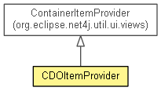

org.eclipse.emf.cdo.ui
Class CDOItemProvider
java.lang.Object
 org.eclipse.jface.viewers.ViewerComparator
org.eclipse.jface.viewers.ViewerSorter
org.eclipse.net4j.util.ui.StructuredContentProvider<INPUT>
org.eclipse.net4j.util.ui.views.ItemProvider<CONTAINER>
org.eclipse.net4j.util.ui.views.ContainerItemProvider<IContainer<Object>>
org.eclipse.emf.cdo.ui.CDOItemProvider
org.eclipse.jface.viewers.ViewerComparator
org.eclipse.jface.viewers.ViewerSorter
org.eclipse.net4j.util.ui.StructuredContentProvider<INPUT>
org.eclipse.net4j.util.ui.views.ItemProvider<CONTAINER>
org.eclipse.net4j.util.ui.views.ContainerItemProvider<IContainer<Object>>
org.eclipse.emf.cdo.ui.CDOItemProvider
- All Implemented Interfaces:
- EventListener, IBaseLabelProvider, IColorProvider, IContentProvider, IFontProvider, ILabelProvider, IStructuredContentProvider, ITreeContentProvider, IListener
- public class CDOItemProvider
- extends ContainerItemProvider<IContainer<Object>>

Implements multiple functionality related with UI representation of basic CDO concepts on
TreeViewer-based editors and views.
For instance, behaves as content and
label provider for concepts such as CDOSession,
CDOView, CDOResource and CDOResourceFolder. It also providers common context menu action over
those elements.
- See Also:
IContentProvider,
ILabelProvider
|
Method Summary |
int |
compare(Viewer viewer,
Object e1,
Object e2)
|
void |
dispose()
|
protected void |
elementAdded(Object element,
Object parent)
|
void |
fillBinaryResource(IMenuManager manager,
CDOBinaryResource resource)
|
void |
fillBranch(IMenuManager manager,
CDOBranch branch)
|
void |
fillContextMenu(IMenuManager manager,
ITreeSelection selection)
|
boolean |
fillGenerated(MenuManager manager,
CDOSession session)
|
void |
fillResource(IMenuManager manager,
CDOResource resource)
|
void |
fillResourceFolder(IMenuManager manager,
CDOResourceFolder folder)
|
void |
fillResourceLeaf(IMenuManager manager,
Object object)
|
void |
fillSession(IMenuManager manager,
CDOSession session)
|
void |
fillTextResource(IMenuManager manager,
CDOTextResource resource)
|
void |
fillView(IMenuManager manager,
CDOView view)
|
protected Object[] |
getChildren(CDOBranch branch)
|
Object[] |
getChildren(Object element)
|
Font |
getFont(Object obj)
|
Image |
getImage(Object obj)
|
Object |
getParent(Object element)
|
protected ResourceManager |
getResourceManager()
|
String |
getText(Object obj)
|
static Image |
getViewImage(CDOView view)
|
static ImageDescriptor |
getViewImageDescriptor(CDOView view)
|
protected Image |
getWorkbenchImage(String name)
|
protected boolean |
hasChildren(CDOBranch branch)
|
boolean |
hasChildren(Object element)
|
boolean |
isMergeMainBranchWithSession()
|
void |
setMergeMainBranchWithSession(boolean mergeMainBranchWithSession)
|
| Methods inherited from class org.eclipse.net4j.util.ui.views.ContainerItemProvider |
addNode, connectInput, createContaineNode, createLeafNode, createNode, disconnectInput, elementRemoved, executeRunnable, filterRootElement, getErrorText, getForeground, getNode, getNodes, getRoot, getRootElementFilter, getSlowText, handleElementEvent, handleInactiveElement, isSlow, removeNode |
| Methods inherited from class org.eclipse.net4j.util.ui.StructuredContentProvider |
expandElement, getBoldFont, getDisplay, getInput, getItalicFont, getViewer, inputChanged, notifyEvent, refreshElement, refreshSynced, refreshViewer, revealElement, selectElement, updateLabels |
| Methods inherited from class java.lang.Object |
clone, equals, finalize, getClass, hashCode, notify, notifyAll, toString, wait, wait, wait |
CDOItemProvider
public CDOItemProvider(IWorkbenchPage page,
IElementFilter rootElementFilter)
CDOItemProvider
public CDOItemProvider(IWorkbenchPage page)
dispose
public void dispose()
- Specified by:
dispose in interface IBaseLabelProvider- Specified by:
dispose in interface IContentProvider- Overrides:
dispose in class ContainerItemProvider<IContainer<Object>>
isMergeMainBranchWithSession
public boolean isMergeMainBranchWithSession()
- Since:
- 4.2
setMergeMainBranchWithSession
public void setMergeMainBranchWithSession(boolean mergeMainBranchWithSession)
- Since:
- 4.2
getChildren
public Object[] getChildren(Object element)
- Specified by:
getChildren in interface ITreeContentProvider- Overrides:
getChildren in class ContainerItemProvider<IContainer<Object>>
getChildren
protected Object[] getChildren(CDOBranch branch)
- Since:
- 4.2
hasChildren
public boolean hasChildren(Object element)
- Specified by:
hasChildren in interface ITreeContentProvider- Overrides:
hasChildren in class ItemProvider<IContainer<Object>>
hasChildren
protected boolean hasChildren(CDOBranch branch)
- Since:
- 4.2
getParent
public Object getParent(Object element)
- Specified by:
getParent in interface ITreeContentProvider- Overrides:
getParent in class ContainerItemProvider<IContainer<Object>>
getText
public String getText(Object obj)
- Specified by:
getText in interface ILabelProvider- Overrides:
getText in class ItemProvider<IContainer<Object>>
getImage
public Image getImage(Object obj)
- Specified by:
getImage in interface ILabelProvider- Overrides:
getImage in class ContainerItemProvider<IContainer<Object>>
getWorkbenchImage
protected Image getWorkbenchImage(String name)
- Since:
- 4.2
getResourceManager
protected ResourceManager getResourceManager()
- Since:
- 4.2
getFont
public Font getFont(Object obj)
- Specified by:
getFont in interface IFontProvider- Overrides:
getFont in class ContainerItemProvider<IContainer<Object>>
fillContextMenu
public void fillContextMenu(IMenuManager manager,
ITreeSelection selection)
- Overrides:
fillContextMenu in class ContainerItemProvider<IContainer<Object>>
- Since:
- 4.2
fillSession
public void fillSession(IMenuManager manager,
CDOSession session)
- Since:
- 4.2
fillGenerated
public boolean fillGenerated(MenuManager manager,
CDOSession session)
- Since:
- 4.2
fillView
public void fillView(IMenuManager manager,
CDOView view)
- Since:
- 4.2
fillBranch
public void fillBranch(IMenuManager manager,
CDOBranch branch)
- Since:
- 4.2
fillResourceFolder
public void fillResourceFolder(IMenuManager manager,
CDOResourceFolder folder)
- Since:
- 4.2
fillResourceLeaf
public void fillResourceLeaf(IMenuManager manager,
Object object)
- Since:
- 4.2
fillResource
public void fillResource(IMenuManager manager,
CDOResource resource)
- Since:
- 4.2
fillTextResource
public void fillTextResource(IMenuManager manager,
CDOTextResource resource)
- Since:
- 4.2
fillBinaryResource
public void fillBinaryResource(IMenuManager manager,
CDOBinaryResource resource)
- Since:
- 4.2
elementAdded
protected void elementAdded(Object element,
Object parent)
- Overrides:
elementAdded in class ContainerItemProvider<IContainer<Object>>
compare
public int compare(Viewer viewer,
Object e1,
Object e2)
- Overrides:
compare in class ViewerComparator
- Since:
- 4.2
getViewImageDescriptor
public static ImageDescriptor getViewImageDescriptor(CDOView view)
- Since:
- 3.0
getViewImage
public static Image getViewImage(CDOView view)
- Since:
- 3.0
Copyright (c) 2011, 2012 Eike Stepper (Berlin, Germany) and others.